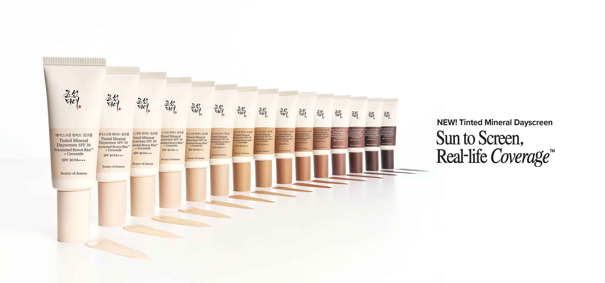
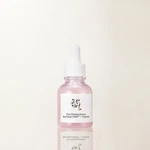

From sun to screen, get real-life coverage with tinted SPF that works on your schedule. This high-performance tinted mineral sunscreen delivers up to 12hr base coverage and pore-blurring coverage, with a lightweight, silky formula for easy application. Find your match from 15 flexible shades.
New Products
Pore Firming Serum

When skin loses elasticity, the areas around your pores can become lax and look more noticeable. We combined our exclusive Red Bean PDRN™with a low-molecular-weight peptide to make pores look smoother and more refined while supporting your overall complexion.
Dynasty Cream

This deeply hydrating formula is infused with some of our favorite ingredients like rice bran water, ginseng root water, squalane, and niacinamide for an irresistably dewy glow. Ideal for both morning and evening skincare routines, this barrier-friendly moisturizer leaves skin looking fresh and radiant. Features a comfortably nourishing texture that absorbs without stickiness and layers well with makeup. Let your skin drink up every drop.
Glow Serum

Get glowy glass skin that looks calm and smooth with every drop. We formulated this multitasking serum to help focus on uneven skin texture and enlarged pores, keep oil-moisture levels balanced, enhance radiance, and soothe. Packed with propolis, BHA (beta hydroxy acid), and niacinamide for your right-away glass skin reset. The thick, cushiony texture sinks in easily without leaving any sticky residue behind.